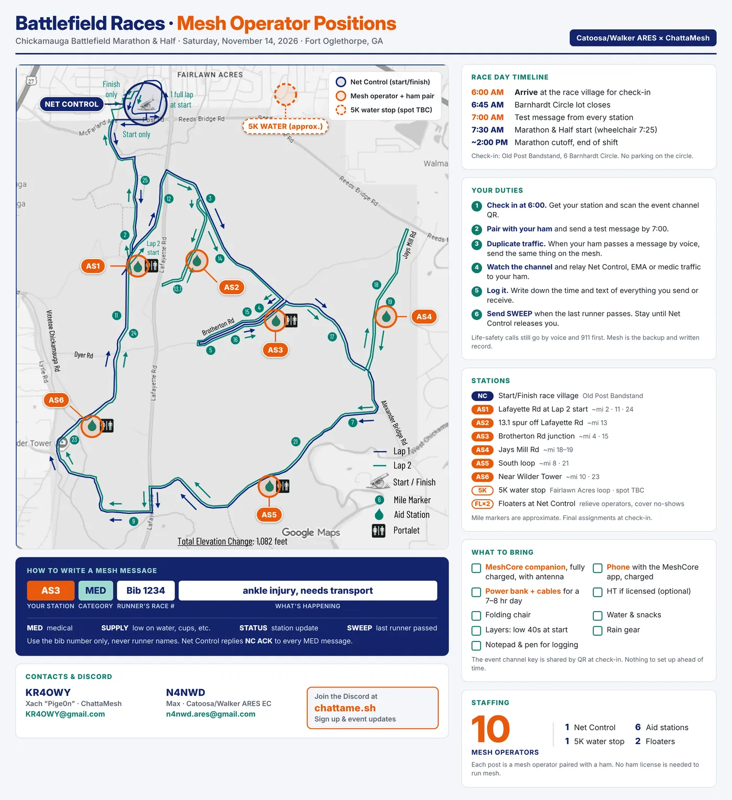

Announcements
What's happening on the Chattanooga mesh — meetings, rollouts, and what's changed lately.

Tap the chart for the full-size version.
ChattaMesh is running MeshCore alongside Catoosa/Walker ARES for the Chickamauga Battlefield Marathon & Half. Every post is a mesh operator paired with a ham — no ham licence is needed to run mesh.
Barnhardt Circle lot closes at 6:45, so arrive before then — and don’t park on the circle itself. Every station sends a test message at 7:00; the marathon and half start at 7:30, wheelchair start 7:25.
What you’ll be doing
- Pair up with your ham and duplicate their voice traffic on the mesh
- Relay Net Control, EMA and medic traffic back to them
- Log the time and text of everything you send or receive
- Send SWEEP when the last runner passes, and stay until Net Control releases you
Messages go out as station · category · bib number · what’s happening — for example AS3 MED Bib 1234 ankle injury, needs transport. Bib numbers only, never runner names. Life-safety calls still go by voice and 911 first; the mesh is the backup and the written record.
What to bring
- A charged MeshCore companion with its antenna, and your phone with the MeshCore app
- Power bank and cables — it’s a 7–8 hour day
- Folding chair, water, snacks, notepad and pen
- Layers and rain gear; it’s in the low 40s at the start
The event channel key is shared by QR code at check-in, so there’s nothing to set up beforehand.
Signing up
Put your name down on the ChattaMesh Discord, where event updates go out too. Questions to Xach (KR4OWY) for ChattaMesh, or Max (N4NWD), Emergency Coordinator for Catoosa/Walker ARES.
A first draft, put up for feedback. Nothing here is final.
PayPal pool
We have opted for a PayPal Pool. It will be created and held by @Zixxorb | Cleveland, and members of the Resource Committee will have access to the account.
Resource committee
The committee exists to vote, without bias, on how our donated and shared resources get spent. The focus is repeater parts — expanding and strengthening the mesh.
Current nominees:
- @zixxorb2Cleveland
- @hewhopunsRed Bank
- @Pige0n | RedbankRed Bank / Hixson
- Open seat
- Open seat
Interested in joining? Nominate yourself in #funding on
Discord. If you have a concern about a specific committee
member, raise it publicly in the same channel.
How to contribute
Nothing to contribute to yet — the pool opens once the committee is seated. When it does, there will be:
- A direct link here on chattame.sh
- A QR code at meetings and at presentations — clubs, hamfests, and so on
Transparency
This site and the Discord will both keep a public log of the current pool balance and every purchase made from it. The funding page is where that log lives.
Feedback wanted
Questions, concerns or ideas? Reply in #funding.
We would rather hear them now, while this is still a draft.
Open on YouTube if you'd rather watch it there.
Thanks to
- Chattanooga Amateur Radio Club for coming in, opening the doors, and letting us use their classroom
- @HeWhoPuns for hosting the meeting
- @Animusreptor for live streaming, mixing, and providing audio equipment
Minutes
- Welcome and introductions
- Review from last meeting
- Regions presentation — Pige0n
- “Thanks for being kind with my anxiety. Never done this before. Love you all!” —Pige0n
- The FCC 500 kHz topic
- No current plan of action to change. LoRa scans are being done on key infrastructure sites to determine the best frequency to use at 500 kHz BW.
- No urgent need to change settings at this point.
- ThinkNode M9 malware
- The website — settings, contacts, guides, etc.
- (Please don't make me program a forum :( —Pige0n)
- Please request any specific guides for anything you'd like!
- Adding a funding model — who donates, what's used.
- Add meeting minutes.
- Discord
- The next meetup, and should they be more frequent?
- Decided In-person meetings quarterly.
- Decided Discord for monthly meetings. Dates TBD.
- Funding (to be continued) — see the funding page
- Discussed three potential options:
- Option 1 — the “GoFundMe” approach. Repeater-by-repeater basis.
- Option 2 — the “non-profit / club” approach. Electing a treasurer and running a non-profit. No one at this time wants to run a non-profit.
- Option 3 — the “NashMesh” approach. A PayPal pool that can be donated to, with resource allocation voted upon.
- Whichever option we choose, allocation of resources and donations needs to be made extremely public, for the sake of transparency.
- Discussed three potential options:
- Extra things brought up
- Discussions with Chris-W4YEM of Cleveland ARC about future MC/MT deployments.
- Using repeater names to advertise small mom-and-pop businesses. Made clear there will be no advertisements taking up any airtime beyond the standard advert by repeater name.
- Alabama regions: at this time no Alabama regions are known, and we do not intend to impose anything upon them.
Rolling out region scoping
The big one. We're rolling out regions and getting ahead of things. As a default, most repeaters in Chattanooga are running this set of scopes:
usus-eastus-southeastus-tnus-tn-eastus-tn-cha
There's more on setting up regions for your own repeater on the Setup & Information page.
Wardriving traffic is scoped to us-tn
MeshMapper is the app we use for wardriving. To keep that traffic local
and avoid bothering our neighbors on the other side of the borders, we've
scoped all #wardriving traffic to us-tn and
enforced hybrid mode. A lot of members are also running the airtime
saving function in the beta.
Getting CHA onto the map
We're working alongside AkkerKid to get the CHA region onto MeshOMatic, and donating some computing power and wardriving data toward it. It's a great tool and worth a look.
What's new here
Added a Videos tab, with The Comms Channel's playlists embedded. Added more hardware recommendations with links to where to buy them. Added more local mesh communities and radio clubs to the home page.
If there's something else you'd like to see on the site, tell us on Discord.
Archived Events 1 past event
Hamfest Chattanooga 2026 is at the Catoosa County (GA) Colonnade. It’s a spectacular new venue for the show, and only about two miles from I-75 at GA Exit 2A — which is itself about two miles below the Tennessee–Georgia state line, just south of Chattanooga.
264 Catoosa Cir
Ringgold, GA 30736
MeshCore panel · 4:00–5:00 PM
Come learn about MeshCore.
Panelists: The Comms Channel (TennMesh) · Pige0n (ChattaMesh) · xJCross (UCMesh)